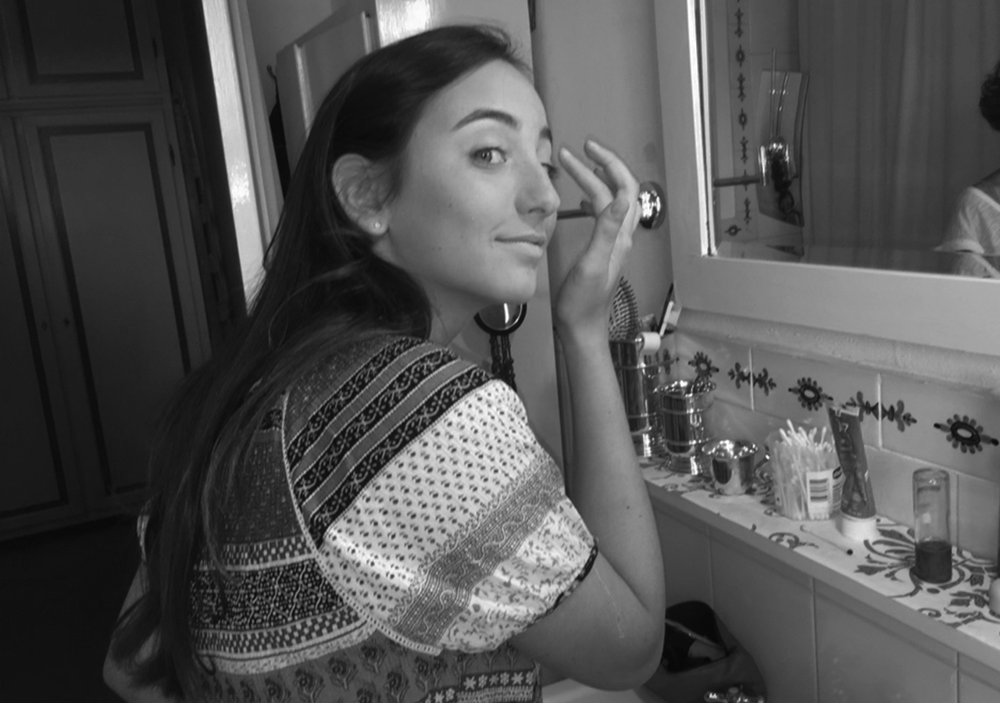
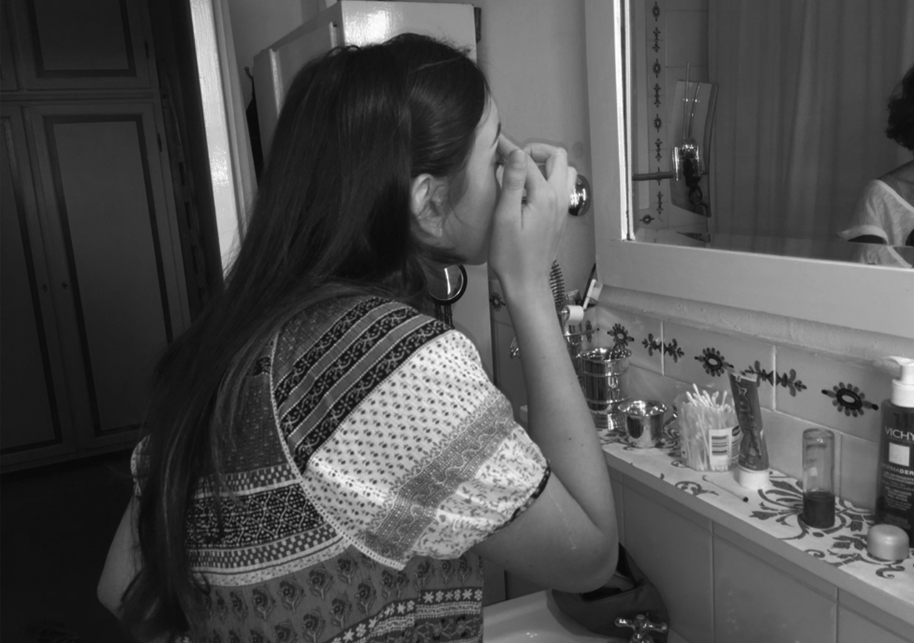

WHAT TO KNOW
Hello everyone, I'm Bianca; an italian girl with the passione of art. I've always loved art and design. I'm currently studying in Spain at IE University, and I'm in my 3rd year. I am a highly motivated student, hard-working and team leader. I have a strong international background and I'm looking to pursue a career in the design sector; so have alook on what I do.


BACKGROUND INFORMATION
Highly motivated, hard-working and team leader student, with a strong international background. Looking to pursue a career in the marketing-related sector. I have an italian baccalaureate and now I am studiyng Design at IE University. During the second semester of my 3rd year I did a semster abroad at the University of MIAMI. I speack three languages: Italian, English and Spanish. As hobbies I really like reading and doing sposrt, I was a member of a Ski Team in Switzerland and competed at a regional level.